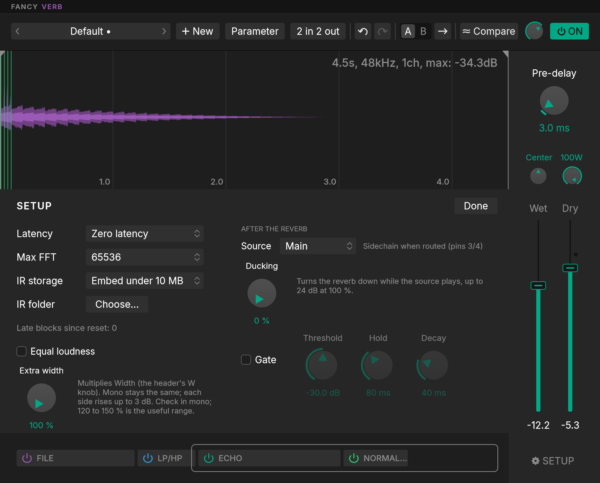
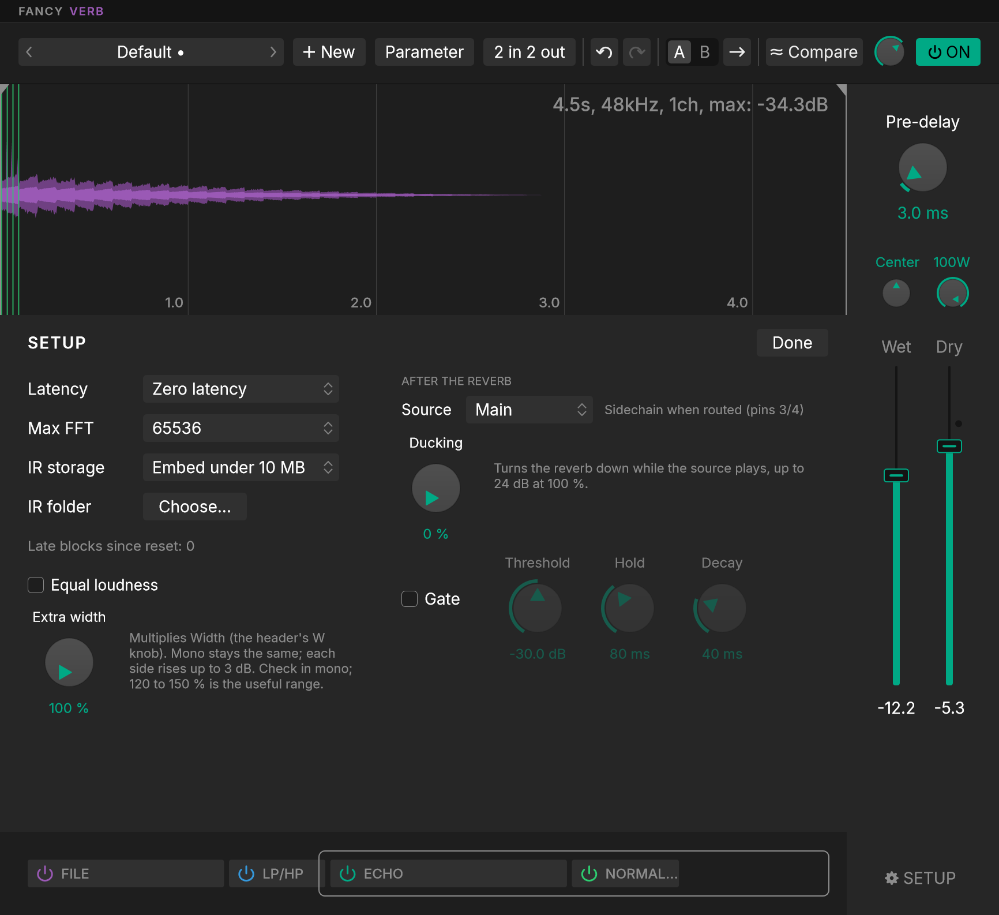

Fancy Verb: v1.7.2 mockup (Freeze and Shimmer)
docs/verb.md, Phase 4 Wave 3: Freeze and shimmer, Decisions 1 to 4 A (user, 26 November 2026). New things in dashed yellow, on the plugin's real screenshot (1x coordinates).
1 · The main window: Freeze at the top right of the IR display
Freeze is a toggle button under the display's info line, 70 x 22 like Delay's. It holds what the reverb is playing for as long as it's on; new input no longer enters the reverb, and the dry signal is unaffected. Automatable.

Freeze
Off is today's sound, to the bit. The tooltip reads "Freeze: holds the reverb as it is, for as long as it's on. Turned off, it dies away at the IR's own decay." The window keeps its size.
2 · Freeze on
The button lights in Verb's purple and the display takes a faint purple tint, so a frozen reverb shows even when the button is out of sight of the mouse.
Freeze
The waveform, trim handles and the right-click menu work as usual while frozen; a change to the IR is heard once Freeze is off.
3 · A (recommended): the SETUP drawer reaches over the chain strip, and Shimmer gets its own row under the Gate
The drawer covers the rack today; with SETUP open the chain strip has nothing to show, so the drawer takes its 72 px too and the window keeps 866 x 697. Shimmer (0 to 100 %, 0 by default) sits in Ducking's column, with Interval (Octave up, Fifth up, Fourth up, Octave and fifth up, Two octaves up, Octave down) beside it.

Interval
Octave up
Feeds the reverb back into itself an interval higher, so the tail rises in octaves. It always dies away; Freeze holds it.
At 0 % the output is today's, to the bit, and Interval does nothing. No existing control moves or changes size. Closing SETUP (Done, or the SETUP button) brings the strip back.
4 · B: the window grows 96 px taller (866 x 793), and the strip stays
The drawer and the module cards grow 96 px; the cards' knobs stay where they are, with the new height empty under them. The Wet and Dry faders keep their length.

Interval
Octave up
Feeds the reverb back into itself an interval higher, so the tail rises in octaves. It always dies away; Freeze holds it.
Costs height on every screen for one row that only SETUP shows.